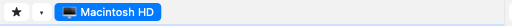

Glavno okno
Peach Commander prikazuje dva seznama datotek drug ob drugem, tako da hkrati vidite, od kod datoteke prihajajo in kam gredo. Večina dela poteka v teh dveh podoknih; vrstice okoli njiju pa vam omogočajo preklapljanje med pogoni, skok v mapo in izvajanje pogostih datotečnih ukazov, ne da bi zapustili tipkovnico. Ta predstavitev poimenuje vsak del okna, da bo preostanek pomoči smiseln.
 (Slika: Glavno okno — dve podokni z vrstico gumbov, vrstico pogonov in vrsticama poti nad njima ter vrstico funkcijskih tipk pod njima.)
(Slika: Glavno okno — dve podokni z vrstico gumbov, vrstico pogonov in vrsticama poti nad njima ter vrstico funkcijskih tipk pod njima.)
Podokni in aktivno podokno
Okno je razdeljeno na levo in desno podokno, vsako prikazuje vsebino ene mape. Naenkrat je aktivno samo eno podokno: prikazuje kazalec (označeno vrstico), njegova vrstica poti pa je izrisana z barvnim ozadjem. Ukazi, kot sta kopiranje in premikanje, vedno delujejo na aktivnem podoknu in pošiljajo datoteke v drugo.
- Kliknite kamor koli v podoknu, da postane aktivno, ali pritisnite Tab za preklop med njima.
- S puščičnimi tipkami premikajte kazalec gor in dol po aktivnem podoknu.
- Pritisnite Enter na mapi, da jo odprete, ali na
..na vrhu seznama, da se pomaknete raven navzgor.
Vrstice okoli podoken
- Vrstica gumbov (na vrhu): vrsta ploščatih gumbov za pogoste ukaze. Kliknite gumb, da izvedete njegov ukaz; z desnim klikom na gumb uredite vrstico.
- Vrstica pogonov: en gumb za vsak razpoložljiv disk ali nosilec, vsak s kontrolnikom za izmet in prikazom prostora. Kliknite nosilec, da nanj preklopite dano podokno.
- Vrstica poti: prikazuje trenutno mapo kot drobtinično pot, po kateri lahko klikate. Kliknite segment, da skočite naravnost v tisto mapo, ali kliknite pot, da vnesete lokacijo.
- Vrstica stanja (pod vsakim seznamom): sprotni povzetek podokna — koliko datotek in map je izbranih ter njihova skupna velikost.
- Ukazna vrstica (na dnu): besedilno polje, kamor lahko vnesete ukaz v slogu lupine, ki se izvede v trenutni mapi.
- Vrstica funkcijskih tipk (čisto na dnu): šest gumbov z oznakami F3 Ogled, F4 Urejanje, F5 Kopiraj, F6 Premakni, F7 NovaMapa in F8 Izbriši. Kliknite gumb ali pritisnite ustrezno tipko.

(Slika: Vrstica pogonov — en gumb za vsak nosilec, s kontrolnikom za izmet in prikazom preostalega prostora.)Bližnjice
| Dejanje | Bližnjica |
|---|---|
| Preklop aktivnega podokna | Tab |
| Odpri mapo / element pod kazalcem | Enter |
| Pomik v nadrejeno mapo | Backspace |
| Ogled datoteke | F3 |
| Urejanje datoteke | F4 |
| Kopiranje v drugo podokno | F5 |
| Premik / preimenovanje v drugo podokno | F6 |
| Nova mapa | F7 |
| Izbris (v Koš) | F8 |
Opombe
- Vrstica funkcijskih tipk se sproti prekaže, ko držite modifikacijsko tipko. Če na primer držite Shift, se F6 spremeni v dejanje preimenovanja na mestu, tako da gumbi vedno prikazujejo, kaj bodo tipke storile prav zdaj.
- Skoraj vsako vrstico je mogoče prikazati ali skriti. V menijih Pogled in Konfiguracija poiščite možnosti za vklop in izklop vrstice gumbov, vrstice pogonov, ukazne vrstice ali vrstice funkcijskih tipk oziroma za navpično zlaganje podoken (eno nad drugo) namesto drug ob drugem.
- Na mnogih tipkovnicah Mac tipke F privzeto delujejo kot kontrolniki za predstavnost in svetlost. Da jih uporabite neposredno, pritisnite tipko Fn skupaj s F3–F8 ali v Sistemskih nastavitvah vklopite »Uporabljaj tipke F1, F2 itn. kot standardne funkcijske tipke«.